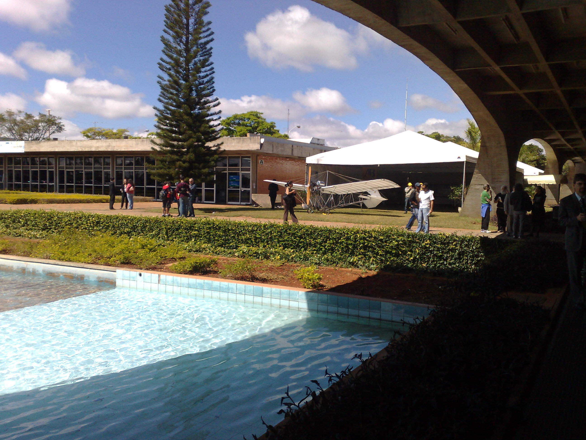
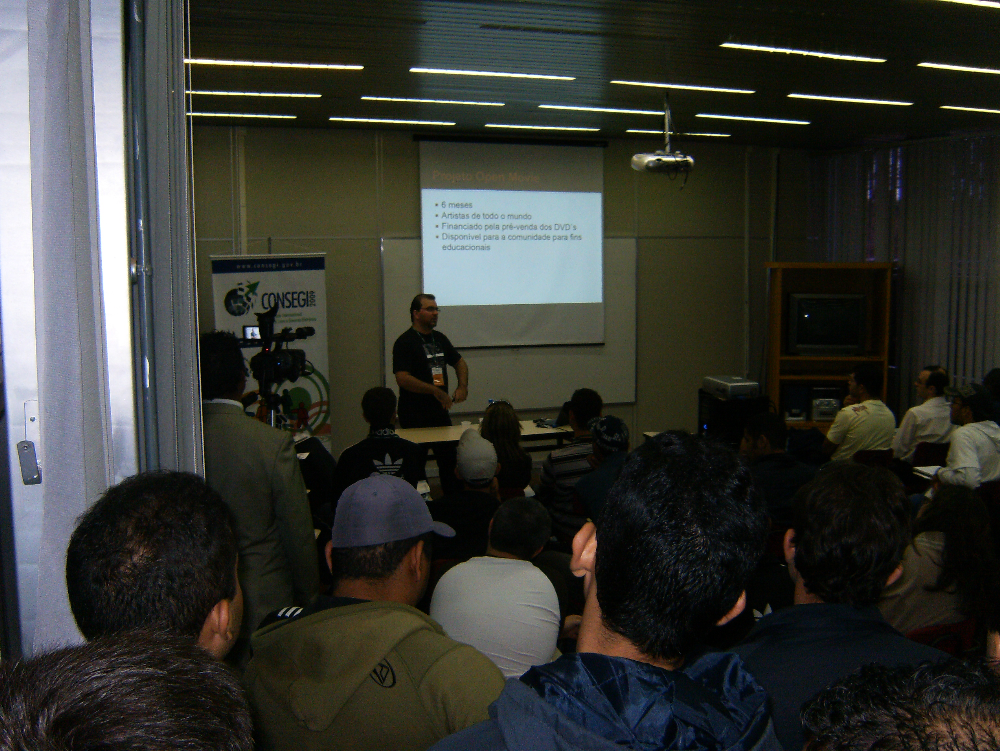
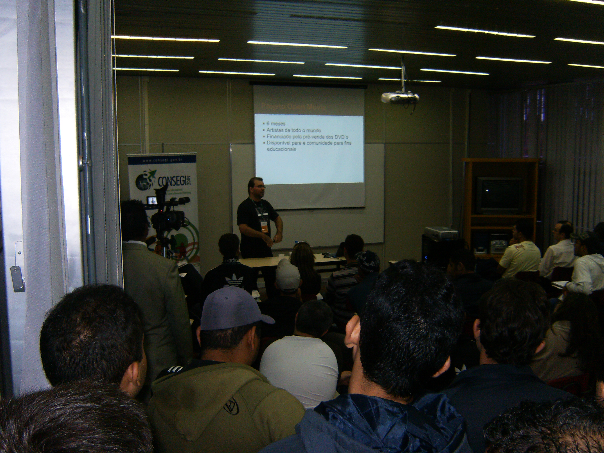
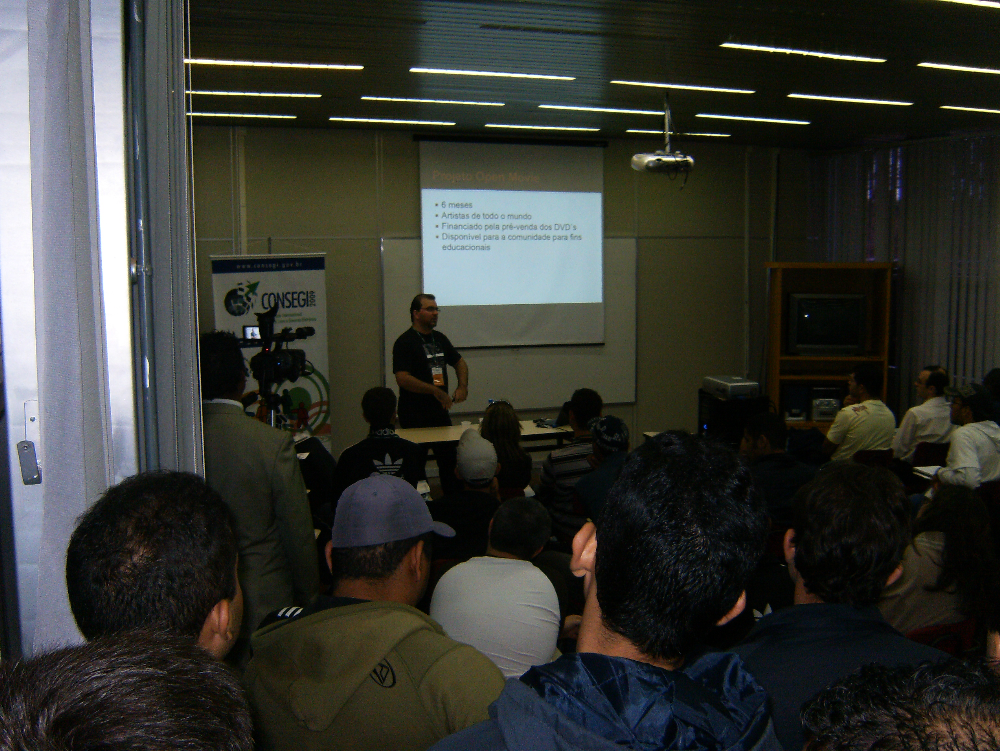

PythOnRio no CONSEGI 2009 - Congresso Internacional de Software Livre e Governo Eletrônico
August 25 2009, 3:59 PM
Amanhã começa o CONSEGI 2009 que movimentará todo o mundo do Software Livre discutindo as tecnologias e suas aplicações sociais.
Com várias trilhas de palestras simultâneas, o CONSEGI 2009 será transmitido ao vivo pela Internet a partir das 9 horas desta quarta-feira, 26 de agosto.
Dentre os destaques do primeiro dia, você poderá conferir às 14:30 na sala Grace Hopper, a famosa palestra "The Zen of Python" do Giuseppe Romagnoli. No segundo dia você poderá conferir às 9:45h na Richard Stallman a Palestra Blender: Simulações, Jogos 3D e Maquetes Eletrônicas apresentada por Jonh Edson, no mesmo dia às 14:00h ocorrerá na Sala da Comunidade Mozilla a oficina PyS60 - Desenvolvimento de Aplicações para Dispositivos Móveis também ministrado por Jonh Edson. No terceiro dia você poderá conferir às 14:00h na Sala Linus Torvalds a Palestra: Cenário de Cloud Computing com software open source apresentado por Luis Claudio Pereira Tujal e às 14:45h na Sala Alm. Alvaro Alberto a Palestra: Quem é o dono do software? apresentado por Claudio Berrondo. Todos são membros atuantes da Comunidade PythOnRio.
Divirtam-se!!
[]'s, Henrique Bastos


 

